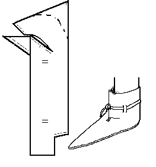

Basic Front Laced Ankle boot (c1000-1200)
An ankle boot based on a design found in
Shoes and Pattens (figs 2,5,9,12,83,86).
Made with a rand. May be made with a Binding stitch on the upper edge, may have a heel stiffener, and may be decorated with a vamp stripe.
The basic design is MY estimate of the pattern, and may not be absolutely accurate.
Return to
[Index] or
[Next]
Footwear of the Middle Ages - Historical Shoe Designs/Number 22, by I. Marc Carlson. Copyright 1996
This page is given for the free exchange of information, provided the Author's Name is included in all future revisions, and no money change hands, other than as expressed in the Copyright Page.